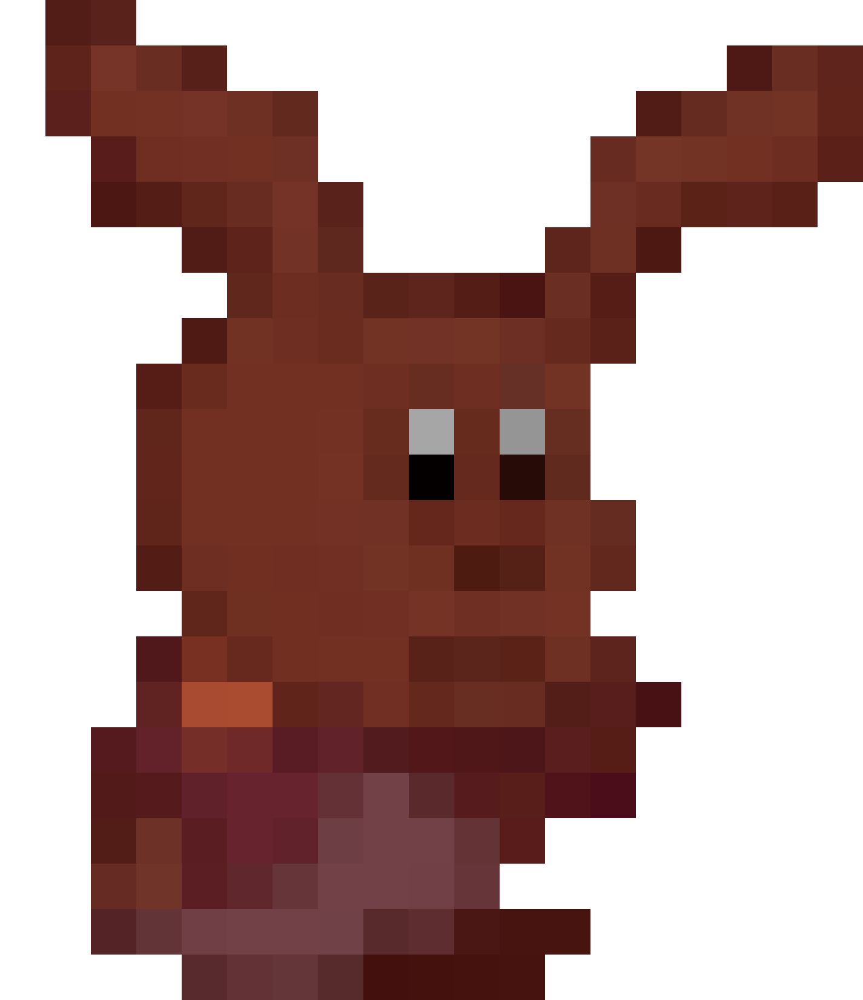

Click on any Item Card to save them
Each Critter can equip up to two items at the same time. Each item offers different perks and can altar your gameplay style. Items are achieved through crafting.
Great for beginners. The Lawnbird's power lets them inspect any place on the map. They do this by flying up to see the map through a bird’s eye view.
But since the Lawnbird is a ground bird that can fly for only a little bit, they must return to their original spot after inspecting. Stat-wise, the Lawnbird is very well-rounded.
It leans more toward offensive skills rather than defensive. If you’re new but like to take risks, this may be the critter for you.
Small, but very durable, the Petrap is a very resilient critter. They're harder to beat than you think. They even waddle and scoot as a way to move.
It can even jump through very bizarre methods that probably break several laws of physics. It uses its mouth as a hand, and its tie as a handy tool.
While not very athletic or mobile, the Petrap can use its power to roll like a tumbling boulder and gain +4 on stamina.
This allows it to move further in distance rolls, which can come in a lot of handy when you’re trying to get from one place to another.
They wear masks for a bunch of reasons. These include fashion, culture, and protection from identity theft. Cats'n'Masks must be clever to outsmart their enemies.
Thanks to their training in martial arts, they can meditate and gain much necessary wisdom. Their power grants them +2 on Smarts, which helps in Inspections and talk encounters.
And all three of their stats can be used for Stealthy encounters. If you desire to evade a 2nd round of an encounter, then be sure to take advantage of the cats' stats in Athleticism, Shield, and Stealth.
These avian critters sadly can’t fly up to inspect the map like the Lawnbird. Hobravins hold a very different, but useful power.
Thanks to its big brain that happens to be larger than its torso, the Hobravin can use its mind and power to create health potions that raise 3 HP.
They also have high Smarts and Crafting, which can be great for finding and making Items respectively.
Alanites get their name from the Alacorn (a winged unicorn) and a chess knight. They also happen to be servants of a guy named Alan, but he’s been out of the picture for a while.
Like the Petrap, the Alanite don’t have any arms or legs. But their wings grant them decent mobility. Additionally, their power grants them a finite form of telekinesis, which can move any object or critter from one room to another.
There is nothing you can do to stop them when you’re being moved.
Growls are ultimately a giant stuffed bear, but they prefer the term "Plush Golem." They can stare into the eyes of any adjacent player and put them to sleep, resulting in a lost turn for the victim.
This power can only be done to one player at a time. This can also be used for NPCs made by the game’s narrator. So it doesn't necessarily have to be a jerk move.
The Snow Growl has a tendency to hide their sleeping victims (by covering the body with magazines, garbage, etc.).
While their victims are asleep, nothing can be done to harm them.

They must be cunning and quick to survive. Always be on the move and ready to work yourself out of a tricky situation. Their sugar rush power gives them one advantage.
After finishing a turn, the Chewbunny can exit the room they’re in to go to an adjacent space — as long as it's unlocked.
Even if you've already rolled for distance, this power lets your critter move again, making the Chewbunny a great asset in stealth missions.
Chiplins are a hybrid of Gremlins and Chipmunks. Their power allows them to steal Item Cards, which is a move that NO ONE ELSE CAN DO. This may seem like an overpowered move.
But thankfully, they can only perform this act when unseen. They’ll have high stats in Stealth, so be sure to save this power and use it during a stealthful Action, Encounter, or Distance Roll.
Be sneaky and clever, and even the most powerful critters won’t see you coming.
Heavy hitters and combat-oriented critters who also happen to be terrible at talking themselves out of fights. Their power can counter any damage or action aimed at them.
If someone inflict the Wookong with a physical offense or manipulation trick, the Wookong can turn the tables by doing the exact same action to the inflictor.
For encounters, the Wookong’s power will reflect any received damage onto the opponent. While this may seem like a crazy good power, it can’t be pocketed.
You can only use it in real time.
Tr'elfs are the only critters to really resemble people – because they’re technically not critters.
These fawn-like beings were once rulers of the wild, but they stepped down from that position to be one with nature.
However, their long-lost royal instincts give them +2 in Charisma, but it can only be tapped in by using their power.
This card is for players who prefer to be human-like characters in roleplaying games
Very sly creatures -- Trash-Dragons have the power to hide in their trash cans and totally disappear for the entirety of the player's turn.
It’s great for avoiding potential encounters in the game. If interaction in roleplay games is boring for you, then this character is potentially great for you.
And even when you’re caught by a potential threat, you have Shield stats to help you out.
Wolves forever in puppy form. Teikos like to dress up as boxers because they think it’s funny. But if they wanted to be boxers (the fighters, not the dog breed), their stretchy arms give them great reach.
In fact, their stretchy arm power can allow them to reach into adjacent open rooms. Here, they can interact with other critters or objects. They’ll receive even +1 in Athleticism.
But most impressively, if they engage in encounters with critters in nearby rooms, their opponent can't retaliate.
These closet monsters can take many forms due to their gaseous state. And while Closemons can take damage and interact with physical objects, they can use their power to phase through any locked areas or Location Cards.
This comes into handy when traveling long distance. Your traveling won’t be halted short by having to unlock a room. Anything with a lock is no problem for the Closemon!
These sentient bots carry a special weapon that can immediately deal a confirmed 2HP damage to any critter present in their Location Card. When you're playing as an Insecktoid, be wary of groups that present a threat to you.
If you can, find a group of friends you can trust. And if you’re ganged up on, it’s better to flee than to be a superhero. They have the lowest health of all the critters.
Fortunately, they have really impressive stats with high Athleticism, Smarts, and Craft, making them the glass cannons of Critter Roll.
Mineytaurs are the heaviest critter in the game, giving them high HP. They also have incredibly good stats for Craft and Athleticism… at a price. Since they don’t have hands - or hooves - they have a negative stat in Handiness.
Don’t worry, this negative stat is generously compensated by a really cool power. Without having to roll for craft, the Mineytaur can build a Binding or Trap Item Card using their power.
If they start to carry too many items, they can make many friends by giving out their free items.
The Deskmouse resembles a computer mouse, and that’s because they’re good at using computers.
Deskmouse stats shine in operating equipment on Location Cards. Even if the Narrator avoids adding machines to the Location Cards, the Deskmouse can still use Handiness to interact with its surroundings optimally.
Their power grants +3 on Craft. If saved up enough times, they can guarantee any Item Card when rolling for Craft.
Gelsens are intelligent blobs from an alien planet who came here to conquer all. But instead of that, they decided to just live their own life here.
Their stats are the most active in the game with +2 on Athleticism and Charisma. For their power, their hands can morph into all sorts of tools that will grant +2 on Handiness.
Like all stat-related powers, this ability can be stacked and saved up. Additionally, they can use this power to escape Binding.
Fun Fact: The Gelsen can shapeshift to appear in many different forms.
The Pair o' Pixies aren't technically pixies. They’re sentient flames that take the form of tiny fairies.
Canonically, these two are stuck together in the game. If you like to talk with yourself when playing, this can be a fun character. Just be sure to do different voices so players can discern who you’re speaking as.
Their negative Athleticism should dissuade you from trying to get into encounters. If one pixie dies, the other dies.
For better odds, use the Pixies’ power to roll two times (and pick the highest roll). The roll to achieve this power can be attempted TWICE.
The Widonome is a weed. They can actually suck 2 HP from any nearby critter. The victim must be present in the Widonome's Location Card.
If you’re not looking to raise your health, their sneaky weed shenanigans can allow them to go underground, giving +2 on Stealth.
The way these critters work is a little more unconventional than most. They have no stats that can help out in fights. Instead, Widonomes are great for alternate playstyles where players can think outside the box.
The Piñatosaurus runs on candy, but don’t judge them for their tastes. These critters are incredibly intelligent who also know to fight. Unlike the Widnome, all of their stats help in encounters.
Their power allows them to completely dodge any attack, even if the opponent rolls a natural 20 or uses their power. Because the Swing Dodge power can be saved and stacked, the Piñatosaurus can guarantee its own safety if attacked.
If you’re facing the Piñatosaurus, it’s good to encounter them frequently before they store up too many swing dodges.
Nobody knows where the Osi came from, but they're here now and ready to make a difference.
Many Osi's love to dress themselves up as very unique characters. They are pretty blank slates with powers that can be customly chosen by the player to replicate any Critter Power in the Critter Roll roster.
If you play as an Osi, please draw as many features as you'd like onto them. Make them as wacky and zany as you'd like with your own artistic additions.